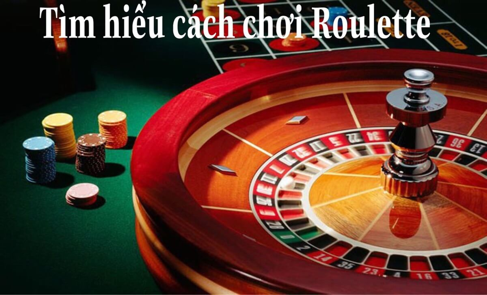
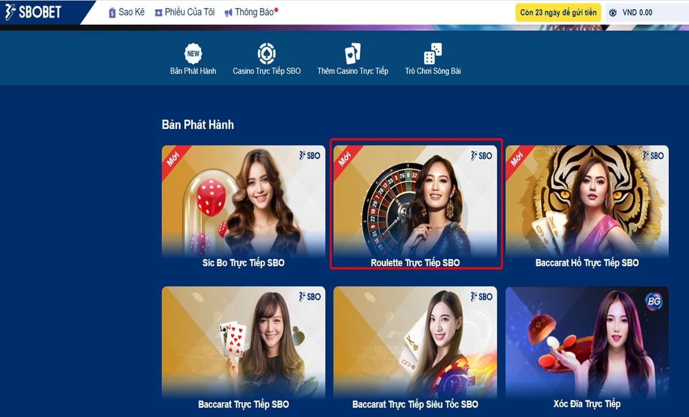
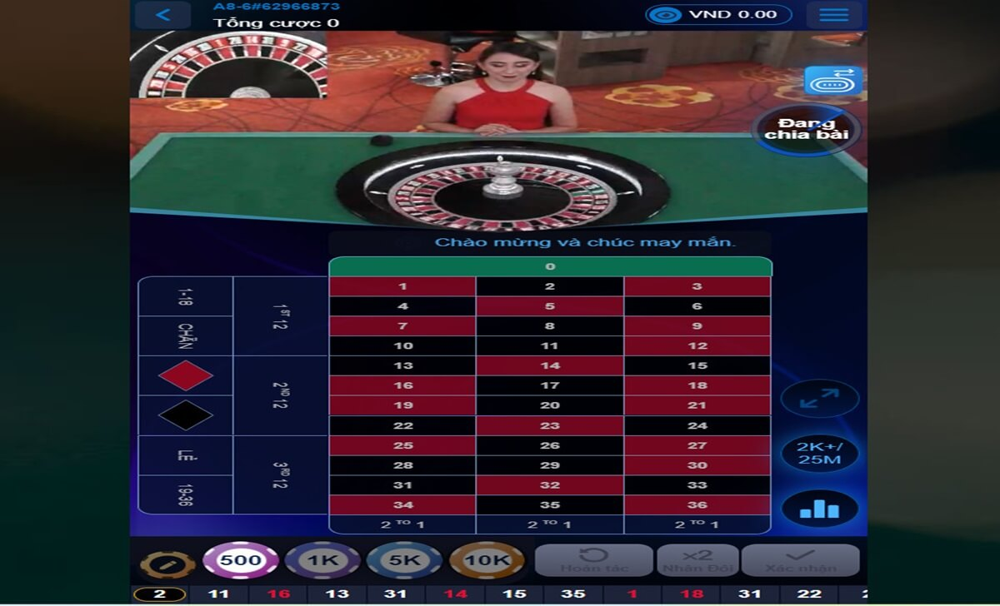

Home – Casino trực tuyến Sbotop – Roulette Live Sbotop là gì? Hướng dẫn đặt cược Roulette
ROULETTE LIVE SBOTOP LÀ GÌ? HƯỚNG DẪN ĐẶT CƯỢC ROULETTE
Hiện nay, Roulette đang được biết đến là một trò chơi cờ bạc phổ biến trên thế giới, và được nhiều người yêu thích bởi sự hấp dẫn và thú vị. Trong bài viết này, chúng tôi sẽ giới thiệu về Roulette Live Sbotop là gì, cách chơi Roulette và hướng dẫn đặt cược Roulette Live hiệu quả nhất mà anh em cần tham khảo nhé!
Giới thiệu về Roulette Live Sbotop là gì?
Giới thiệu về Roulette Live Sbotop là gì?
Roulette Live Sbotop là một dịch vụ cung cấp trò chơi Roulette trực tuyến, do nhà cái Sbotop phát triển và vận hành. Sbotop là một trong những nhà cái uy tín và lâu đời nhất trên thị trường cá cược Việt Nam, với nhiều sản phẩm hấp dẫn như thể thao, casino, xổ số, poker và nhiều hơn nữa.
Theo các đánh giá từ chuyên gia, Roulette Live Sbotop là một trong những sản phẩm casino trực tuyến nổi bật của Sbotop, được nhiều người chơi lựa chọn bởi những ưu điểm sau:
Tìm hiểu cách chơi Roulette
Tìm hiểu cách chơi Roulette
Để chơi Roulette, bạn cần biết về quy tắc, cách đặt cược và cách tính toán kết quả của trò chơi này như sau:
Quy tắc
Roulette gồm một bánh xe (wheel) và một bảng đặt cược (layout). Bánh xe có 37 hoặc 38 ô số, tùy thuộc vào phiên bản Roulette mà bạn chơi. Các ô số được sắp xếp không theo thứ tự, và có màu đỏ hoặc đen, ngoại trừ ô số 0 (và 00 nếu có), có màu xanh. Bảng đặt cược có các ô tương ứng với các ô số trên bánh xe, cùng với các ô đặt cược khác như đỏ/đen, chẵn/lẻ, cao/thấp, hàng, cột, đoạn và nhiều hơn nữa.
Trước khi bắt đầu mỗi vòng chơi, người chơi sẽ đặt cược vào các ô mà họ muốn trên bảng đặt cược. Người chơi có thể đặt cược vào một hoặc nhiều ô, với số tiền tùy ý, miễn là không vượt quá mức cược tối đa của bàn chơi.
Sau khi người chơi đặt cược xong, người quay số (croupier) sẽ quay bánh xe theo một hướng, và ném một quả bóng nhỏ (ball) vào bánh xe theo hướng ngược lại. Quả bóng sẽ lăn trên bánh xe và rơi vào một ô số khi bánh xe dừng lại. Ô số mà quả bóng rơi vào chính là kết quả của vòng chơi.
Cách đặt cược
Có nhiều loại cược khác nhau trong Roulette, được chia thành hai nhóm chính là cược trong (inside bets) và cược ngoài (outside bets). Cược trong là các cược đặt vào các ô số trên bảng đặt cược, còn cược ngoài là các cược đặt vào các ô khác như đỏ/đen, chẵn/lẻ, cao/thấp, hàng, cột, đoạn và nhiều hơn nữa. Các loại cược trong và ngoài có tỷ lệ trả thưởng và khả năng thắng cược khác nhau, tùy thuộc vào số lượng ô số mà chúng bao gồm.
Cách tính toán kết quả
Nếu bạn thắng cược, bạn sẽ nhận được số tiền thắng cược bằng số tiền đặt cược nhân với tỷ lệ trả thưởng của loại cược đó. Ví dụ, nếu bạn đặt cược 100.000 đồng vào cược một số và thắng, bạn sẽ nhận được 100.000 x 35 = 3.500.000 đồng.
Nếu bạn thua cược, bạn sẽ mất số tiền đặt cược. Ví dụ, nếu bạn đặt cược 100.000 đồng vào cược một số và thua, bạn sẽ mất 100.000 đồng.
Nếu kết quả là ô số 0 (hoặc 00 nếu có), bạn sẽ thua tất cả các cược ngoài, và một nửa số tiền đặt cược của các cược trong (trừ cược một số, hai số, năm số và bốn số đầu). Đây là quy tắc gọi là la partage (chia đôi), áp dụng trong một số phiên bản Roulette. Ví dụ, nếu bạn đặt cược 100.000 đồng vào cược ba số và kết quả là 0, bạn sẽ nhận lại 50.000 đồng.
Hướng dẫn đặt cược Roulette Live hiệu quả tại Sbotop
Hướng dẫn đặt cược Roulette Live hiệu quả tại Sbotop
Với những anh em tân binh mới tham gia Roulette thì hãy tham khảo qua những hướng dẫn đặt cược tại nhà cái Sbotop dưới đây:
Đăng ký đăng nhập tài khoản Sbotop
.jpg)
Đăng ký đăng nhập tài khoản Sbotop
Đầu tiên, người chơi có thể đăng ký Sbotop miễn phí trên trang web chính thức của nhà cái, hoặc thông qua các đại lý uy tín. Sau khi đăng ký, bạn cần xác minh tài khoản bằng cách cung cấp các thông tin cá nhân và giấy tờ tùy thân. Sau khi xác minh, bạn có thể đăng nhập tài khoản Sbotop bằng tên đăng nhập và mật khẩu mà bạn đã đăng ký thành công.
Nạp tiền vào hệ thống cá cược
.jpg)
Nạp tiền vào Sbotop
Để đặt cược Roulette Live Sbotop, người chơi cần có tiền trong tài khoản Sbotop. Tại đây, anh em có thể nạp tiền Sbotop bằng nhiều phương thức thanh toán khác nhau, như chuyển khoản ngân hàng, thẻ cào điện thoại, ví điện tử, tiền mặt,… Sau khi nạp tiền thành công, bạn sẽ nhận được số dư trong tài khoản Sbotop, và có thể sử dụng để đặt cược Roulette Live Sbotop.
Tiến hành chọn và đặt cược cổng game Roulette
Kế đến, bạn sẽ chọn mục Casino, hệ thống sẽ xuất hiện rất nhiều cổng game casino khác nhau, như Evolution Gaming, Playtech, Microgaming,… Anh em cần chọn cổng game mà bạn muốn chơi, và sau đó chọn trò chơi Roulette Live Sbotop.
Chọn vào cổng game Roulette
Lúc này, bạn sẽ được chuyển đến một giao diện trò chơi, nơi bạn có thể xem bánh xe, bảng đặt cược, người quay số, và các thông tin khác. Bạn cần chọn mức cược phù hợp với ngân sách và mục tiêu của bạn, và sau đó đặt cược vào các ô mà bạn muốn trên bảng đặt cược.
Tiến hành đặt cược Roulette
Đó là những thông tin về Roulette Live Sbotop là gì, cách chơi Roulette và cách đặt cược Roulette Live hiệu quả. Hy vọng bài viết này sẽ giúp bạn có những trải nghiệm thú vị và bổ ích khi chơi Roulette Live Sbotop nhé!